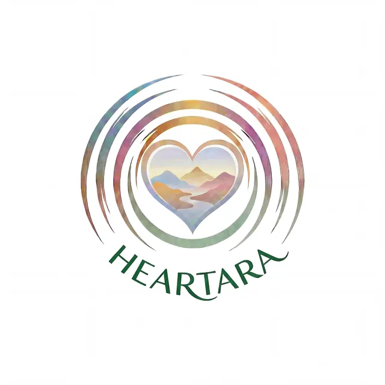
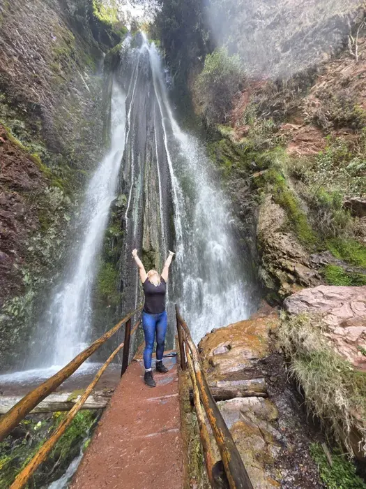
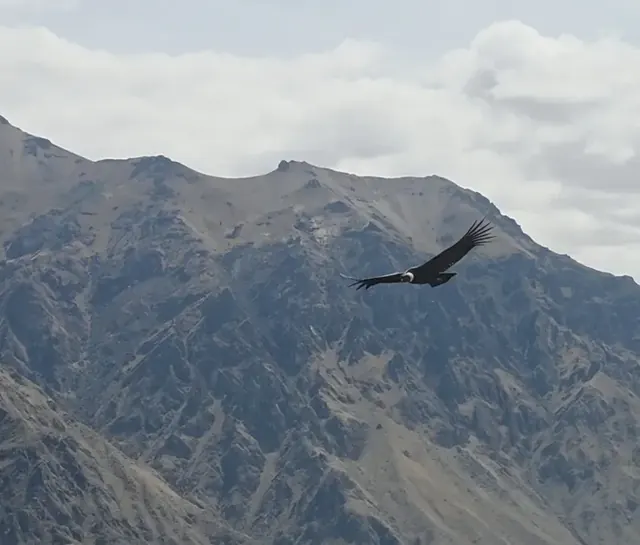
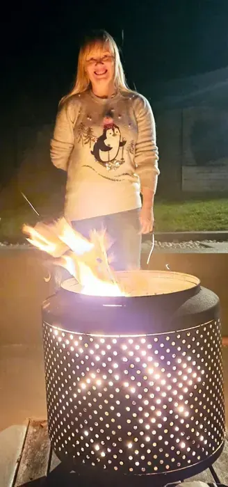
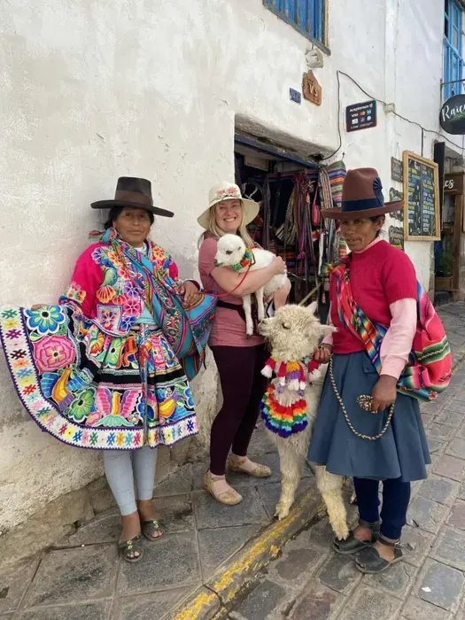
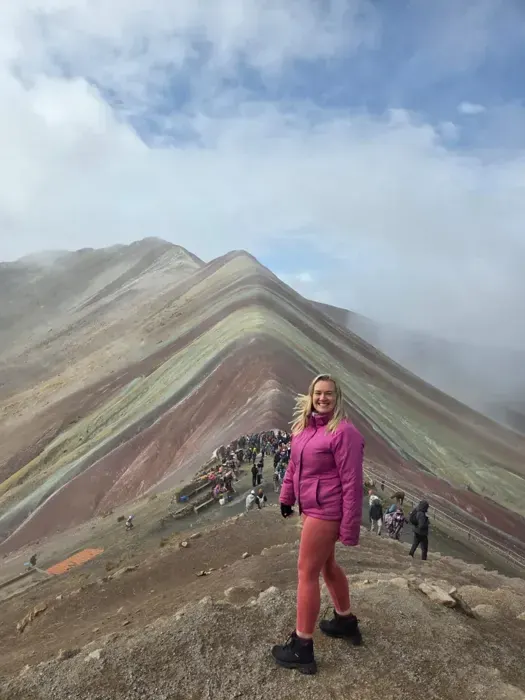
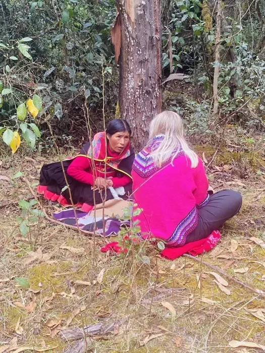
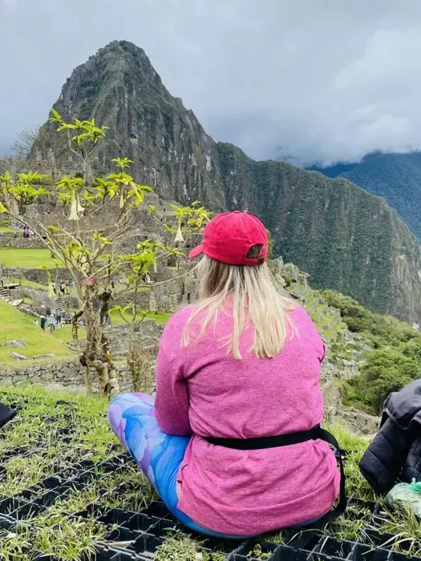
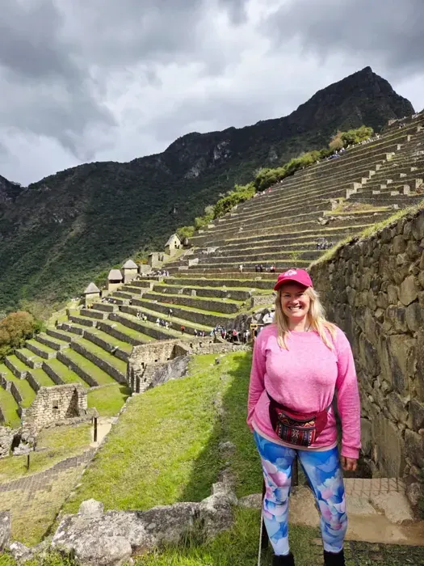

Serpent · Renewal
Serpent invites us to notice what we are ready to release, using the shedding of skin as a symbol of renewal. Its teaching brings attention to the body, the Earth and the present moment.

RETURN TO YOUR HEARTMUNAY KI · CEREMONY · CONNECTION
My connection with this path includes travelling to Peru—experiencing its mountains, sacred places, ceremonies and the people who welcomed me.
I climbed Huayna Picchu’s “Death Stairs” above Machu Picchu, an experience that left me feeling alive and proud. Seeing condors, spending time with a family at Lake Titicaca and participating in ceremonies are also treasured parts of my journey.
I was honoured to receive the Munay Karpay initiation in December 2025, a sacred heart-centred initiation associated with love, compassion and connection. I hold this experience with gratitude and respect for the teachers who shared it with me.








Munay Ki is a contemporary sequence of nine spiritual rites drawing on Andean traditions. Alongside receiving the rites, we explore their meaning and intention, spiritual connection, relationship with nature, and ways to nurture and integrate the teachings between gatherings.
This is an invitation to deepen self-awareness, compassion and self-trust, at your own pace. There is no rush. We make space to receive each rite, reflect on its meaning and bring the teachings into your own life.
Sacred space is an intentional pause from everyday life—a space to become present, listen inwardly and connect with what feels sacred to you. Together, we explore how intention, grounding and ceremony can support your own personal practice.
Sacred fire offers a ceremonial focus for gratitude, reflection, release and new intentions. We explore its meaning and how to approach ceremony with care and respect. Where conditions safely allow, a fire ceremony can form part of our time together.
You do not need previous experience or particular spiritual beliefs. There is space to ask questions, reflect and discover your own relationship with the teachings.
NATURE AS A TEACHER
Serpent, Jaguar, Hummingbird and Condor each bring a beautiful teaching to this journey. We meet them through the Munay Ki teachings, including the Harmony Rite, and through our connection with sacred space and the natural world. Their symbolism invites us to listen, reflect and notice what speaks to our hearts.
Serpent invites us to notice what we are ready to release, using the shedding of skin as a symbol of renewal. Its teaching brings attention to the body, the Earth and the present moment.
Jaguar represents courage and inner strength: meeting what we fear with awareness, and choosing how to move forward with integrity.
Hummingbird reminds us to seek what nourishes the heart and to follow a meaningful path, even when the journey feels larger than we are.
Condor invites us to step back, see the wider landscape and make room for spiritual connection and possibility beyond an immediate difficulty.
As we explore the rites, these teachings become invitations for personal reflection. You can work with their symbolism in a way that feels meaningful to you, without needing a particular vision or experience.